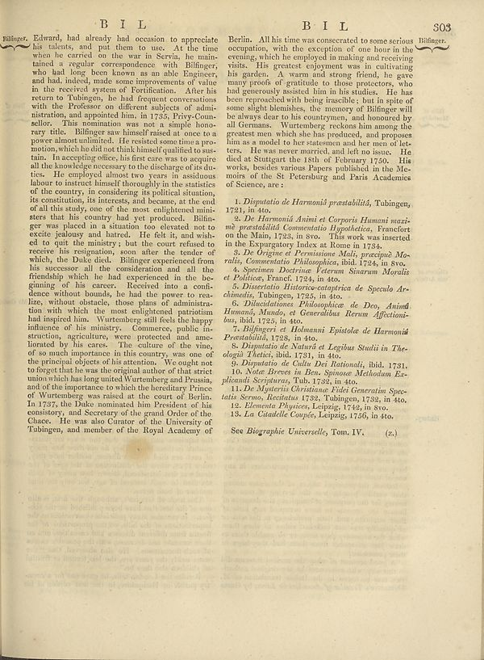

Source · scan and Parse blocks
Layers 4

Parse text by block reading order
- 0Page-headerB I L
- 1Page-headerB I L
- 2Page-header503
- 3CaptionBlfinger.
- 4TextBillinger. Edward, had already had occasion to appreciate his talents, and put them to use. At the time when he carried on the war in Serie, he maintained a regular correspondence with Billinger who had long been known as an able Engineer, and had, indeed, made some improvements of value in the received system of Portification. After his return to Tubingen, he had frequent conversations with the Professor, on different subjects of administration and appointed him, in 1735, Privy-Comseller. This nomination was not a simple honorary title. Billingers saw himself raised at once to a power almost unlimited. He revisited some times pro motion, which he did not think himself qualified to sustain. In accepting office, his first case was to require all the knowledge necessary to the discharge of its duties. He employed almost two years in assiduous laborto to interact himself thoroughly in the statistics of the country, in considering its political situation, its constitution, its interests, and became, at the end of all this study, one of the most enlightened mini- stere that his country had yet proved. Billinger was placed in a situation too elevated not to excite jedowny and harred. He left is, and waited to get the ministry; but the court refused to receive his resignation, soon after the tender of which, the Duke died. Billinger experience from his successor of the consideration and all the friendship which he had experienced in the beginning of his career. Received into a confidence without bounds, he had the power to realize, without obstacle, those plans of administration with which the most enlightened particulars had inspired him. Wurtemburg still feels the happy influence of his ministry. Commerce, public interaction, agriculture, were protected and amorliorated by his cases. The culture of the true, of so much importance in this country, was one of the principal objects of his attention. We ought not to forget that he was the original author of that strict union which has long united Wurtembourg and Prussia, and of the importantes to which the hereditary Prince of Wurtemburg was raised at the court of Belfin. In 1737, the Duke nominated him President of his consolony, and Secretary of the grant Order of the Chace. He was also Counter or the University of Tubingen, and member of the Royal Academy of
- 5TextBerlin. All his time was consecrated to some serious occupation, with the exception of one hour in the evening, which he employed in making and receiving visits. His greatest employment was in cultivating his garden. A warm and strong friend, he gave many proofs of gratitude to those protectors, who had previously assisted him in his studies. He has been reproached with being insecible; but in spite of some slight blemishes, the memory of Blfinger will be always due to his countrysmen, and honored by all Germans. Wurtemburg reckons him among the greatest men which she has produced, and proposes him as a model to the statement and her man of letters. He was more married, and left no issue. He died at Settargar the 18th of February 1750. His works, besides various Papers published in the Memoirs of the St Petersburg and Paris Academies of Science, are :
- 6List-item1. _Disputatio de Harmoniá prestabilità_, Tubingen, 1723, in 40c.
- 7List-item2. _De Harmonia Animi et Corporis Humani mazi mè prestabilità Commentato Hypothetica_. Francfort on the Rain, 722, in 8vo. This work was inserted in the Exrangatory Index in Rome in 1734.
- 8List-item3. _De Origins et Permissione Mali, precipue Morrulla, Commentato Philosophica_, ibid. 1724, in 8vo.
- 9List-item4. _Specimen Dietrich Veteran Sinatur Moralis et Politica_, francf. 1724, in 40c.
- 10List-item5. _Discretato Historiocetapria da Speculo Arionatie_, Tubingen, 1725, in 40c.
- 11List-item6. _Dilucidations Philosophica de Deo, Anima Himmoni, Monato, et Generatious Revarum Affectioni-Ion_, Ibid. 1725, in 40c.
- 12List-item7. _Billingert et Holmanni Epistola de Harmonia Prestabilità_, 1728, in 40c.
- 13List-item8. _Disputate de Mararó et Legius Studii in Theologiä Thetici_, ibid. 1731, in 40c.
- 14List-item9. _Disputate de Collo De Rationali_, ibid. 1731, 10. _Victor Breves in Losa, Spinose Melodam Explicanti Scriptures_, Tub. 1732, in 40c.
- 15List-item11. _De Mysteris Gratitura Piala Generatin Spec- tatsi Sorneo, Nectitatus_ 1733, Tubingen, 1728, in 40c.
- 16List-item12. _Elementa Physics_, Leipzig, 1742, in 8vro.
- 17List-item13. _La Ciudelle Coupé_, Leipzig, 1756, in 40a.
- 18TextSee _Biographie Universelle_, Tom. IV. (z.)
Provenance page_id, checksum, Parse model
- page_id
- britannica:309f765b1ecc83e0a7f7762e44b4a927a7555443:train:1678
- sha256
- 75b494c1b4fb241bd9dcaba505dfb1732b3c54ff9f843f0d4a7c1c31110a6ec8
- Parse
- nvidia/nemotron-3.5-parse · finish stop